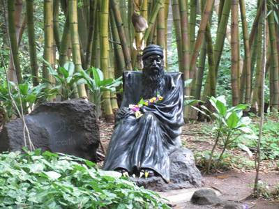

Shaniwar Wada,Pune Overview
.jpg)
Shaniwarwada, once the seat of the Peshwa governance in Pune is a 286-year-old mansion and is one of
the finest examples of architecture in the city. It is now one of the most popular tourist
destinations in Maharashtra. This grand mansion was built by the Peshwa Bajirao I himself as the
residence of the Peshwas. Although the Wada currently covers an area of 625 acres, in its heyday it
covered almost the entire area of the city itself. The place never fails to amaze the visitor with
its various forts and fountain, and the majestic statue of Baji Rao I that greets the visitor at the
entrance of the palace. Although most of the Wada was destroyed by an unexplained fire in 1828, what
remains of it is equally thrilling and majestic.
at the
entrance of the palace. Although most of the Wada was destroyed by an unexplained fire in 1828, what
Aga Khan Palace, Pune Overview

The mighty edifice of Aga Khan Palace is situated in Pune and was built by Sultan Muhammed Shah Aga
Khan III in the year 1892. It is one of the most important landmarks in Indian history and has been
instrumental in many defining moments of India's independence. It was once the site where Mahatma
Gandhi, his wife Kasturba Gandhi, as well as Sarojini Naidu and Mahadev Desai were held prisoners.
Aga Khan Palace is well known both for its architectural excellence as well as its historical
significance. Spread over a vast land of 19 acres, the palace is now the headquarters of the Gandhi
National Memorial society. Here, making khadi is still one of the prime activities.
as well as its historical
significance. Spread over a vast land of 19 acres, the palace is now the headquarters of the Gandhi
Oshoo Ashram, Pune Overview

Osho Ashram, located at Koregaon Park in Pune, is a place known for its serenity and surreal
practices of meditation and love to achieve divinity. It is popularly known as Osho Meditation
Resort and it is a unique blend of meditation and the Greek concept of resort stay. The Ashram is a
tranquil place which brings you to your own centre of peace, meditation, and oneness. The ideologies
of Osho also can be found here. Shrouded in mystery, awe, and mysticism; The Osho Ashram is open
only for its members. Non-members are required to buy a one-day pass to visit the premises.
The ideologies
of Osho also can be found here. Shrouded in mystery, awe, and mysticism; The Osho Ashram is open
only for its members. Non-members are required to buy a one-day pass to visit the premises.
Katraj Park, Pune Overview

The Katraj Snake Park is the most visited and loved tourist attraction in the Rajiv Gandhi Zoo that
is located in Katraj, near the city of Pune in India. The Rajiv Gandhi is a famous and grand zoo
that is spread over an area of 130 acres and is managed by the Pune Municipal Corporation. It is
divided into three parts: the central zoo, an animal orphanage, and the most famous of all: the
Katraj Snake Park. The snake park has successfully managed to acquaint thousands of visitors with
the unusual and fascinating wildlife through its extensive collection of snakes, reptiles, birds and
turtles.the
Katraj Snake Park. The snake park has successfully managed to acquaint thousands of visitors with
the unusual and fascinating wildlife through its extensive collection of snakes, reptiles, birds and
turtles..